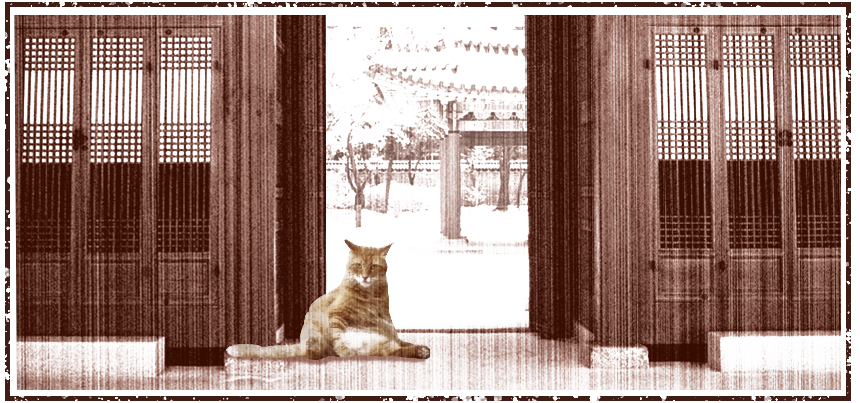
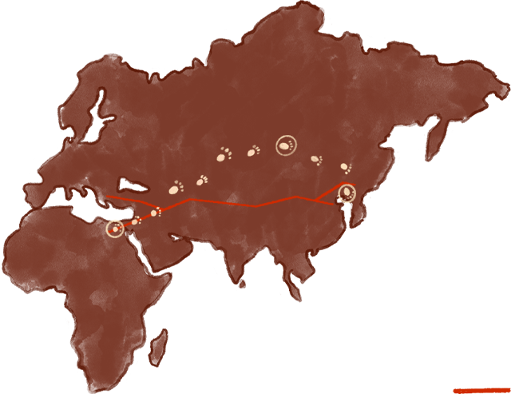

◇ 한반도 진출기

한반도에 들어오게 된 고양이
고양이는 어떻게 한국의 땅을 밟게 되었을지 궁금하지 않으신가요?
본래 한반도에서는 삵을 키워왔다고 합니다. 고양이가 어떻게 삵을 밀어내고 우리와 살아가게 되었는지 알아보세요.
고양이의 한반도 정착

실크로드
고양이는 우리나라에 9세기 정도에 들어왔으며 그 당시는 장보고가 중국과 활발을 교류를 했다고 하는데 그 당시에 고양이가 한반도에 처음 들어왔다는 설이 가장 유력하다. 그 당시 우리나라, 그러니까 6세기경 삼국시대에는 여전히 삵을 키우고 있었지만 중국에서 고양이가 들어오면서 삵의 자리를 채워나가게 되었다. 고양이는 서서히 인간과 가까워졌으며 삵은 다시 야생으로 돌아가게 되었는데 삵은 본래 야생종으로 우리와 함께한 시간에서 기원전 3500년경으로 올라가야 하지만 고양이는 이집트의 가축화로 인해 기원전 약 7500년경부터 인간과 친숙한 관계였다. 이렇게 인간과 먼저 가까웠던 고양이가 한반도의 삵을 밀어내고 인간과 공생할 수 있었다.